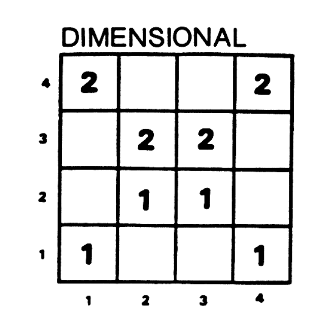

import numpy as np
stimulus = np.array([[0, 0, 0, 0],
[0, 0, 0, 0],
[0, 0, 1, 0],
[0, 0, 0, 0]], dtype=int)
print(stimulus)[[0 0 0 0]
[0 0 0 0]
[0 0 1 0]
[0 0 0 0]]The last chapter introduced the problem of inductive generalization. This chapter will focus on a specific case of generalization that is particular interest to psychologists, cognitive scientists, and people who use AI and machine learning: classification or categorization. Basically, assigning labels to things.
People constantly classify things in the world into categories (chairs, cats, friends, enemies, edible things, and so on). Doing this helps us to communicate and function in novel situations.
In machine learning, it’s often useful to classify inputs into different categories like whether a social media post violates community standards or not, whether an image contains a human face or not, or whether an MRI contains a tumor.
Psychologists study how people form categories because it provides a window into how we organize our knowledge. But the basic problem is the same as the one studied in machine learning.
I’m going to intrdouce a fairly simple psychological model of categorization introduced by Robert Nosofsky called the Generalized Context Model. It assumes that people make classification judgments using the following general algorithm:
This model makes some outlandish assumptions (like the idea that people would remember every example they had seen before). But, to a first approximation, it does a decent job of predicting people’s classification judgments in a lot of situations. And for learning purposes, it has the advantage of being pretty easy to understand and implement.
In psychology, category learning experiments have a pretty similar structure. People see some unfamiliar stimuli that differ on several dimensions and can be sorted into different categories. The task is to learn what distinguishes one category from another. The experiments usually consist of two phases: a training phase, and a testing phase.
The stimuli could be abstract shapes, cartoon insects, race cars with different features, or anything else. What matters is that they have clearly distinguishable features.
For modeling purposes, all of these types of stimuli (with discrete-valued features) can be represented in a matrix, with the following properties:
For example, in Robert Nosofsky’s (1986) test of the GCM1, the stimuli were semicircles with lines through them. The two feature dimensions were (1) circle size and (2) line orientation. Each feature had four possible values.
Using our binary matrix representation, here is one possible stimulus from the Nosofsky experiment:
import numpy as np
stimulus = np.array([[0, 0, 0, 0],
[0, 0, 0, 0],
[0, 0, 1, 0],
[0, 0, 0, 0]], dtype=int)
print(stimulus)[[0 0 0 0]
[0 0 0 0]
[0 0 1 0]
[0 0 0 0]]The Nosofksy stimuli are pretty simple: They can have exactly one value on each dimension, so this representation will always only have a single 1 in the matrix.
If we wanted to know how many of each stimulus to present our model, it would be pretty cumbersome to maintain a long list of arrays like this one. So we could instead maintain a single matrix that stores counts of stimuli. That is, the values at each element will represent the number of stimuli observed with those feature values.
For example, let’s consider the “dimensional” condition of Nosofsky’s experiment, in which subjects saw only the stimuli on the “diagonals” of the matrix. Let’s assume they saw each one 100 times (actually, they did a mind-numbing 1200 trials after 2600 practice trials 🥴). We could represent that like so:
training_set = np.array([[100, 0, 0, 100],
[0, 100, 100, 0],
[0, 100, 100, 0],
[100, 0, 0, 100]], dtype=int)
print(training_set)[[100 0 0 100]
[ 0 100 100 0]
[ 0 100 100 0]
[100 0 0 100]]This still isn’t ideal though. Because it doesn’t represent the category labels that subjects got during their training. We don’t know which examples belonged to which categories.
Thinking ahead to how the GCM works, let’s instead represent the training examples more like a list, so that we can iterate through them:
tDimensional = np.zeros((8,3), dtype=int)
tDimensional[0] = [1,1,1]
tDimensional[1] = [1,2,2]
tDimensional[2] = [1,3,2]
tDimensional[3] = [1,4,1]
tDimensional[4] = [2,1,4]
tDimensional[5] = [2,2,3]
tDimensional[6] = [2,3,3]
tDimensional[7] = [2,4,4]
print(tDimensional)[[1 1 1]
[1 2 2]
[1 3 2]
[1 4 1]
[2 1 4]
[2 2 3]
[2 3 3]
[2 4 4]]In this format, each row of the matrix is an array with three elements. The first element is the category label: 1 or 2. The second two elements are the indices into the stimulus matrix. Note: Here I’ve deviated from Python norms to be consistent with the numbering in the table in the original Nosofsky paper, shown below. When working with the model, remember that indexing in Python starts with 0.

Here, I will describe a special case of the model here that applies to tasks (like the one in the paper) with only two categories. However, this model can easily be extended to any number of categories. The model is defined by two key equations.
The first equation defines the probability of classifying Stimulus \(S_i\) into Category \(C_1\) (i.e., Category 1):
\[ \begin{equation} P(C_1|S_i) = \frac{b_1 \sum_{j \in C_1} \eta_{ij}}{b_1 \sum_{j \in C_1} \eta_{ij} + (1-b_1) \sum_{k \in C_2} \eta_{ik}} \end{equation} \tag{4.1}\]
The sum \(\sum_{j \in C_1}\) is a sum over all stimuli \(S_j\) that belong to Category 1. The sum \(\sum_{j \in C_1}\) is a sum over all stimuli \(S_k\) that belong to Category 2.
Equation Equation 4.1 has a parameter \(b_1\) which is defined as the response bias for Category 1. \(b_1\) can range from 0 to 1 and captures the possibility that a subject is biased to respond with one category or another. This is similar but not identical to a prior distribution. When \(b_1\) is small, the model is biased toward Category 2; when \(b_1\) is large, the model is biased toward Category 1. Note that when \(b = 0.5\), it cancels out of the equation.
We could also include a response bias for Category 2, but the model assumes that \(\sum_i b_i = 1\). Therefore, when there are only two categories, \(b_2 = 1 - b_1\) which is what you see in the second term of the denominator of Equation Equation 4.1.
\(\eta_{ij}\) is a function that defines how similar to \(S_i\) and \(S_j\) are. The GCM assumes that stimuli can be represented as points in a multi-dimensional space (in this case, a two-dimensional space) and the similarity is defined as a function of the distance between those two points:
\[ \eta_{ij} = e^{-c^2 \left[w_1 (f_{i1} - f_{j1})^2 + (1-w_1)(f_{i2} - f_{j2})^2 \right]} \]
where \(f_{i1}\) and \(f_{i2}\) refer to the feature values on dimensions 1 and 2 of \(S_i\). This equation has two parameters: \(c\) and \(w_1\). \(c\) is a scaling parameter that affects how steeply the exponential curve is. This will allow us to account for how different people might have different ideas of how close two stimuli have must be to be called similar. \(w_1\) is called the attentional weight for dimension 1. This parameter captures how much weight is placed on dimension 1 over dimension 2. Just like \(b_1\), \(w_1\) can range from 0 to 1, and the larger it is, the more weight is placed on dimension 1. Similarly, we could add a \(w_2\), but the attention weights are constrained to sum to 1.
In order to generate predictions from this model, we need two things. First, we need to define what the training stimuli are, and what their feature values are. This is what will allow us to compute the sums in Equation Equation 4.1.
Next, we need to specify the values of the 3 parameters \(b_1\), \(c\), and \(w_1\). Nosofsky does this by first collecting data from people in the experiment. That is, for every stimulus \(S_i\) we can record the proportion of times people classified it as Category 1. In other words, we can collect empirical estimates of \(P(C_1|S_i)\) for all values of \(S_i\).
Then Nosofsky uses a maximum likelihood procedure for fitting the model to the data. Conceptually, the idea is to find the set of values of the three parameters that produce model predictions that are as close as possible to the empirical data. (This is exactly how linear regression works, where you have some data \((\bar{x},\bar{y})\) and want to find the best-fitting values of \(a\) and \(b\) for the function \(y = ax + b\) that describes the relationship between \(x\) and \(y\).)
We can define model fit by mean squared error (MSE). MSE is defined as
\[ \frac{1}{n} \sum_i (y_i - x_i)^2 \]
where \(y\) are the data and \(x\) are the model predictions. A lower MSE means a better model fit. Finding the best values of the parameters can be achieved through an exhaustive search of all values. For example, we might consider all possible values of each parameter in increments of 0.1. We could then write a program that performs the following basic algorithm:

In your next homework you will implement the GCM described above. In the homework, you will have to encode training and test stimuli and implement the equations and model-fitting algorithm above. Additionally, to get some experience with the behavioral side of cognitive science, you will create a working version of a category learning experiment in order to collect some data that you can use to compare with the GCM’s predictions.
Nosofsky, R. M. (1986). Attention, similarity, and the identification-categorization relationship. Journal of Experimental Psychology: General, 115(1), 39-57.↩︎